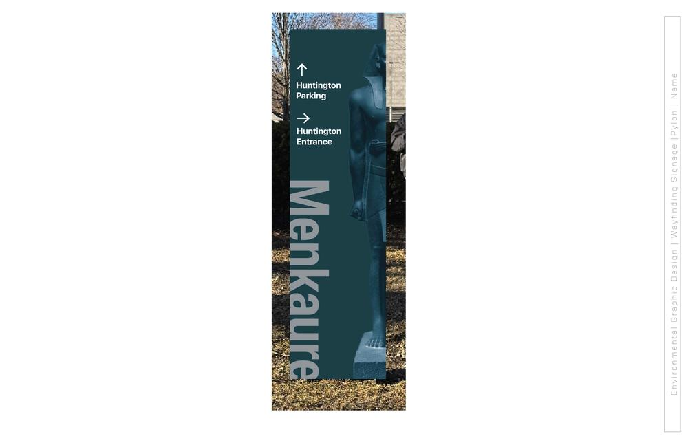
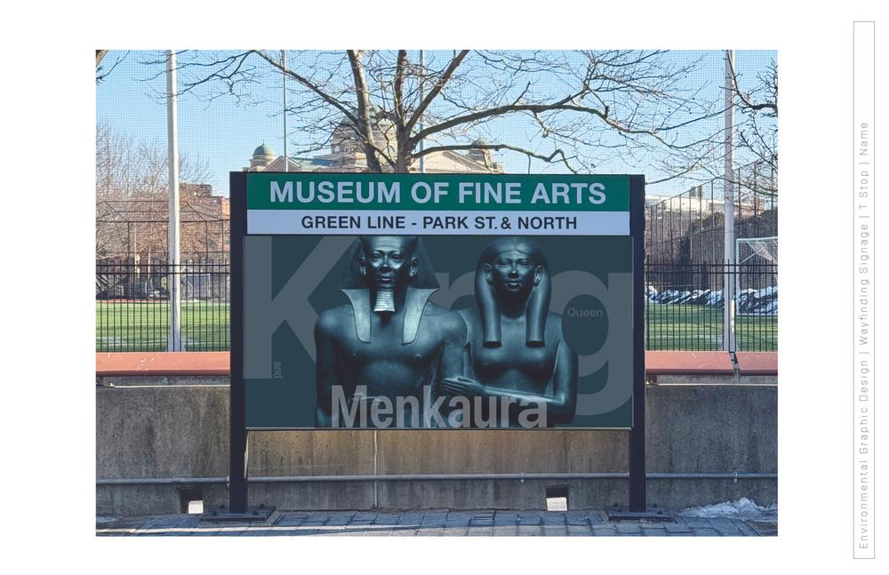
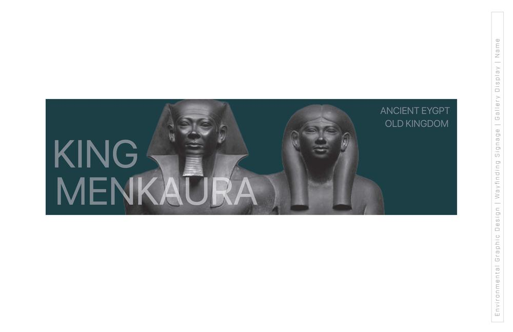

King Menkaura and Queen.
MFA wayfinding system
- Museum
- Wayfinding

This project explores wayfinding and exhibition design through a focused study of King Menkaura and Queen from the MFA’s Ancient Egypt: Old Kingdom collection.
Research and Design
Wayfinding Design
After visiting the Museum of Fine Arts (MFA) and documenting several exhibitions through photography, I analyzed a range of artworks.




Final Design
Posters
I created a series of posters that extended the established color palette and typography inspired by the statue’s strong presence.